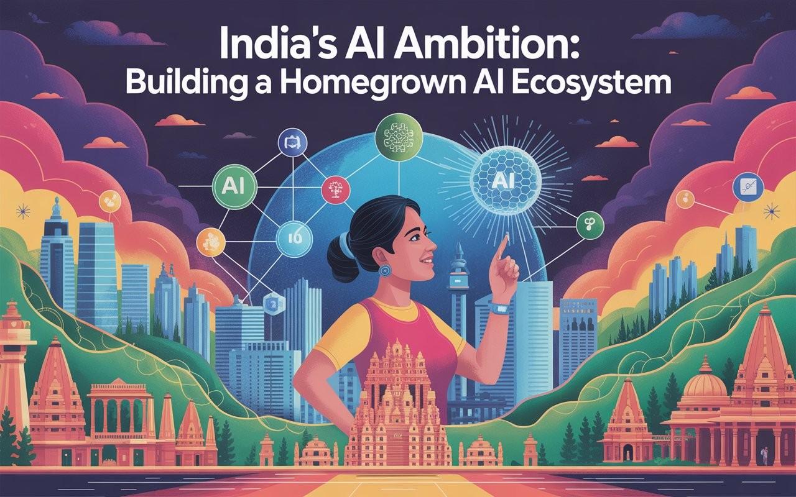

India’s AI Ambition: Building a Homegrown AI Ecosystem

Yash Raj | Posted on Jun 22, 2025
Table of Contents
Abstract Introduction to India’s AI Vision Government Initiatives and Policies Strong Starts, But Lofty Promises Outpace Reality Building AI Infrastructure Nurturing AI Talent The Rise of AI Startups in India AI Applications Across Industries Challenges in Building an AI Ecosystem Conclusion & Future OutlookAbstract
India is steadily working to become a global leader in artificial intelligence. With strong support from government policies, a growing number of startups, and a large pool of skilled professionals, the country is using AI to solve real-world problems and boost economic growth. In this blog, we’ll take a closer look at how India is building its AI ecosystem, from policy and infrastructure to talent development and industry use cases. We’ll also talk about the challenges along the way and what it will take to keep the momentum going.
Introduction to India’s AI Vision
India’s push to become a global leader in AI goes hand in hand with its broader goal of using technology to drive economic growth and improve people’s lives. With over 1.4 billion people and a fast-growing digital economy, the country has a unique opportunity to scale AI in meaningful ways. India’s approach to AI focuses on being inclusive, innovative, and self-reliant. It aims to solve real problems in areas like healthcare, farming, education, and public services, while also strengthening its position on the world stage.
India’s National Strategy for Artificial Intelligence, led by NITI Aayog, sees the country as a global AI hub, a place where practical AI solutions can be built for both local use and international markets. To make this vision a reality, the government is encouraging strong partnerships between public institutions, private companies, and universities. The goal is to build an ecosystem that supports ethical and sustainable AI development. By linking these efforts to national goals, India is working toward a future where technology serves the needs of everyone.
Government Initiatives and Policies
The Indian government has been a major driving force behind the growing use of AI in the country. One of the key steps in this journey was the launch of the National AI Mission in 2024. Through this initiative, the government is investing heavily in AI research, building the right infrastructure, and helping people gain the skills they need to work with these technologies. This mission reflects India’s clear focus on becoming a global leader in AI, while also making sure that the benefits of AI are accessible to everyone and not limited to a few.
Alongside this, the “AI for All” initiative is focused on making AI accessible to everyone, across different sectors and parts of the country. The Digital India program adds to this effort by improving digital infrastructure, helping AI reach both cities and rural areas. At the same time, the Responsible AI Guidelines highlight the importance of using AI in a fair and ethical way, encouraging transparency and accountability. These efforts are further supported by partnerships with global tech companies and academic institutions, building a strong network that helps speed up AI innovation.
Strong Starts, But Lofty Promises Outpace Reality
Since the launch of the IndiaAI Mission, India has taken visible steps toward becoming a global AI leader, but the ground reality still reveals a gap between promise and performance. The government had painted an ambitious vision in March 2025, touting rapid skilling, grassroots accessibility, and large-scale indigenous model development. While proposal counts for foundational AI models have grown impressively, only a small fraction have actually been funded or operationalized. The massive GPU infrastructure promised to support these efforts remains concentrated in select institutes, with no clear roadmap yet for equitable distribution, especially to the Tier 2 and Tier 3 cities that were central to the “AI for All” narrative.
Programs like Bhashini have scaled in terms of API usage and language models, but true vernacular inclusivity is still limited by patchy internet access and low digital literacy in rural regions. The government’s claim of creating 27 new AI data labs in underserved areas sounds promising on paper, but on the ground, many of these labs are still awaiting setup, hardware, or even staff. Similarly, the skilling push through FutureSkills Prime and the YuvAi initiative has reached thousands, but falls far short of the “millions trained” narrative, and has yet to show measurable outcomes in terms of job creation or AI-driven startups from smaller towns.
Moreover, while the government has spoken extensively about building a "safe and trusted" AI ecosystem, robust regulation is still more aspiration than action. Guidelines exist, but enforcement is vague, and transparency around data ethics, surveillance concerns, and AI bias remains limited. India’s AI journey is undoubtedly moving forward, but the gap between high-level declarations and ground-level execution shows that hype must now give way to honest, inclusive, and well-governed delivery. Only then can India claim a leadership role not just in AI ambition, but in AI impact.
Building AI Infrastructure
A strong AI ecosystem depends on having the right computing infrastructure, and India is making solid progress in this area. High-performance computing setups like PARAM Siddhi-AI are giving researchers the power they need to build advanced AI models. At the same time, both the government and private companies are investing in new data centers to expand cloud infrastructure, making it easier to manage and run AI applications efficiently.
The expansion of 5G networks and the growing use of Internet of Things (IoT) devices are improving connectivity across the country. This is opening up new possibilities for real-time AI applications in areas like smart cities, precision farming, and industrial automation. At the same time, projects like AIRAWAT, a cloud platform built specifically for AI, along with the release of open datasets, are giving startups and researchers better access to tools and resources. Together, these steps are helping India move past infrastructure challenges and build a scalable, future-ready AI ecosystem.
Comparison Table: India’s AI Infrastructure vs. Global Leaders| Feature | India | Global Leaders (e.g., USA, China) |
|---|---|---|
| HPC Facilities | Emerging (e.g., PARAM Siddhi-AI) | Advanced (e.g., Summit, Tianhe-2) |
| Data Centers | Rapidly expanding | Highly developed |
| 5G Deployment | Early stages | Widespread |
| Open Data Initiatives | Growing (e.g., AIRAWAT) | Established (e.g., AWS Open Data) |
Nurturing AI Talent
India’s large number of STEM graduates is one of its biggest strengths in the journey toward becoming a leader in AI. To build on this, both the government and private sector are launching training programs focused on AI skills. These programs offer courses in areas like artificial intelligence, machine learning, and data science, helping people gain the knowledge they need to push innovation forward.
Top academic institutions like the IITs and IISc are teaming up with global universities to push AI research forward and create modern, relevant courses. Programs like FutureSkills Prime, which bring together industry and academia, are focused on helping professionals learn the skills needed for AI-focused jobs. The goal is to make sure the workforce keeps up with what the market needs. By 2025, India plans to train millions of people in AI, helping to fill the global talent gap and build a strong, competitive workforce ready to lead the country’s AI growth.
The Rise of AI Startups in India
India’s startup scene has become a lively hub for AI innovation, with more than 1,000 AI-focused startups expected to be active by 2025. Companies like Haptik, known for its conversational AI platforms, Niramai, which uses AI for healthcare diagnostics, and Krishi Network, which helps farmers optimize their work, show how AI is being used in a wide range of fields to tackle both local and global problems. The growing flow of venture capital into these companies reflects the strong global belief in India’s potential in AI, with startups attracting billions in investment. The government is also playing a big role in supporting this growth, programs like Startup India and the creation of incubation centers are helping new businesses grow and expand internationally. With added support through mentorship opportunities and easier access to funding, entrepreneurs are getting the tools they need to turn their ideas into real-world solutions. This wave of AI startups is not only boosting the economy but also helping India stand out as a serious force in the global AI space.
AI Applications Across Industries
AI is transforming key sectors in India by solving real-world problems. In healthcare, it’s improving diagnostics and expanding telemedicine, especially in rural areas. Farmers are using AI tools to boost crop yields and reduce waste through precision farming. In education, AI enables personalized learning for students from diverse backgrounds. The financial sector benefits from smarter fraud detection and credit scoring, while AI in governance is streamlining services like traffic management and complaint resolution, making systems more efficient and citizen-friendly.
Challenges in Building an AI Ecosystem
While India has made great progress in AI, several challenges still need attention. Data privacy and ethical concerns are key, as building trust requires strong safeguards and fair AI systems. In rural areas, limited infrastructure and poor internet access continue to slow down the wider use of AI technologies.
Talent retention is another major challenge, as many skilled professionals move abroad in search of better opportunities, which can weaken India’s competitive edge in AI. At the same time, creating regulatory frameworks that encourage innovation while ensuring strong oversight is a complex task. It requires close collaboration between policymakers, industry experts, and academic institutions. Tackling these issues is essential to maintain the pace of progress and achieve India’s goal of building a self-reliant and globally competitive AI ecosystem.
Comparison Table: India’s AI Challenges vs. Global Context| Challenge | India | Global Context |
|---|---|---|
| Data Privacy | Emerging regulations (e.g., DPDP Act) | Mature frameworks (e.g., GDPR, CCPA) |
| Infrastructure | Urban-rural disparities | More uniform access |
| Talent Retention | High brain drain | Strong retention strategies |
| Regulation | Developing frameworks | Established AI governance |
Conclusion & Future Outlook
India’s push to build its own AI ecosystem marks an important step toward technological independence and global leadership. With a large pool of skilled professionals, supportive policies, and a vibrant startup scene, the country is in a strong position to create AI solutions that solve real problems at both local and global levels. Its emphasis on ethical AI and inclusivity adds to its reputation as a responsible and forward-looking innovator in the global AI space.
Still, the journey ahead comes with its own set of challenges. Addressing concerns around data privacy, improving infrastructure in underserved areas, and keeping top talent in the country will be key to maintaining progress. Looking forward, India’s AI sector is set for rapid growth, powered by innovation and international partnerships. By balancing ethics with strong governance, India has the chance to become a leading force in AI and help shape a more fair and advanced global future.
References
[1] Ministry of Electronics & IT: India’s AI Revolution A Roadmap to Viksit Bharat
Visit Document
(accessed Jun 2025).
[2] Stanford University – AI Index 2024
Visit Website
(accessed Jun 2025).
[3] IndiaAI Innovation Centre (IAIC)
Visit Website
(accessed Jun 2025).
[4] Acropolium: AI Use Cases in Major Industries: Elevate Your Business with Disruptive Technology
Visit Article
(accessed Jun 2025).